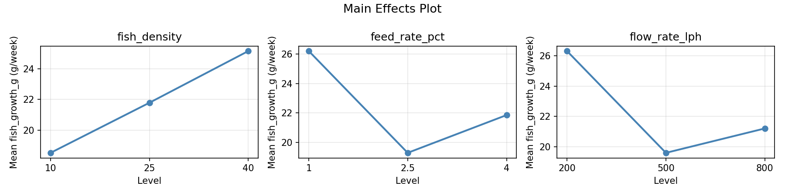
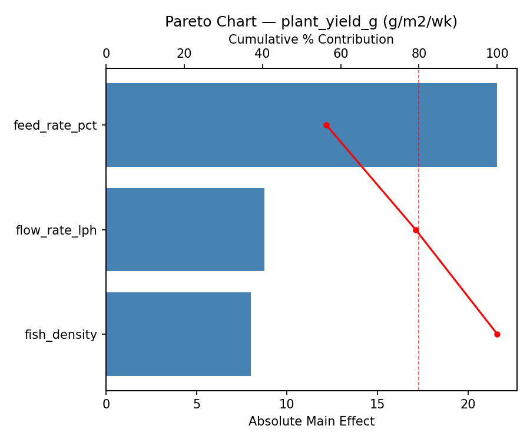
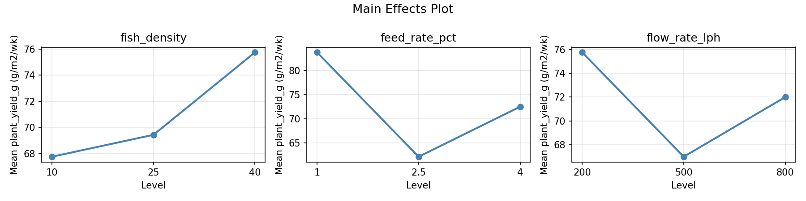
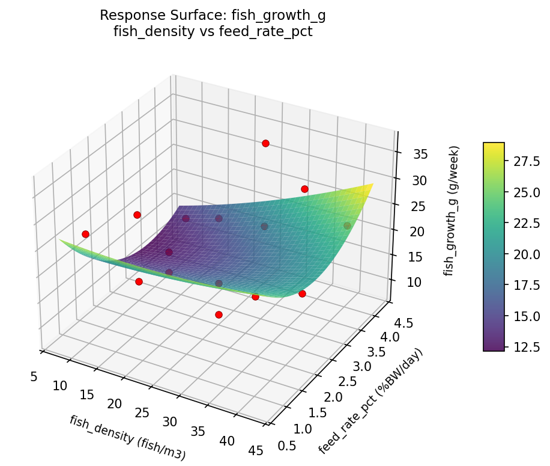
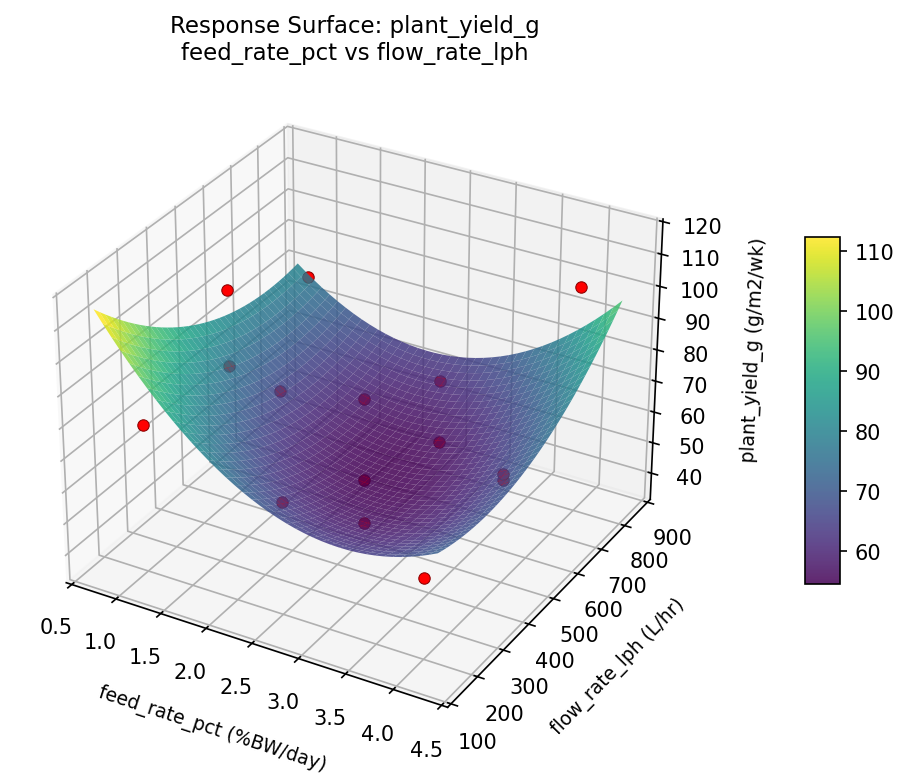
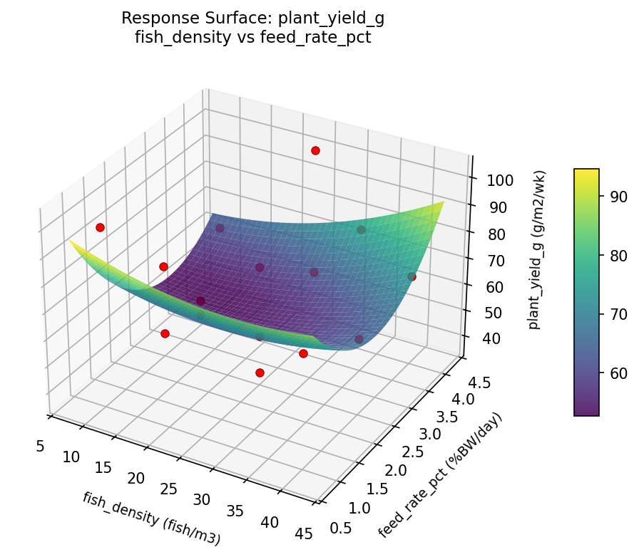

Experimental Setup
Factors
| Factor | Low | High | Unit |
|---|
fish_density | 10 | 40 | fish/m3 |
feed_rate_pct | 1 | 4 | %BW/day |
flow_rate_lph | 200 | 800 | L/hr |
Fixed: fish_species = tilapia, plant = basil
Responses
| Response | Direction | Unit |
|---|
fish_growth_g | ↑ maximize | g/week |
plant_yield_g | ↑ maximize | g/m2/wk |
Configuration
{
"metadata": {
"name": "Aquaponics System Balance",
"description": "Box-Behnken design to maximize fish growth and plant yield by tuning fish density, feeding rate, and water flow rate"
},
"factors": [
{
"name": "fish_density",
"levels": [
"10",
"40"
],
"type": "continuous",
"unit": "fish/m3"
},
{
"name": "feed_rate_pct",
"levels": [
"1",
"4"
],
"type": "continuous",
"unit": "%BW/day"
},
{
"name": "flow_rate_lph",
"levels": [
"200",
"800"
],
"type": "continuous",
"unit": "L/hr"
}
],
"fixed_factors": {
"fish_species": "tilapia",
"plant": "basil"
},
"responses": [
{
"name": "fish_growth_g",
"optimize": "maximize",
"unit": "g/week"
},
{
"name": "plant_yield_g",
"optimize": "maximize",
"unit": "g/m2/wk"
}
],
"settings": {
"operation": "box_behnken",
"test_script": "use_cases/135_aquaponics_balance/sim.sh"
}
}
Experimental Matrix
The Box-Behnken Design produces 15 runs. Each row is one experiment with specific factor settings.
| Run | fish_density | feed_rate_pct | flow_rate_lph |
|---|
| 1 | 25 | 1 | 200 |
| 2 | 25 | 2.5 | 500 |
| 3 | 40 | 2.5 | 800 |
| 4 | 40 | 2.5 | 200 |
| 5 | 25 | 2.5 | 500 |
| 6 | 25 | 2.5 | 500 |
| 7 | 10 | 2.5 | 800 |
| 8 | 40 | 1 | 500 |
| 9 | 25 | 1 | 800 |
| 10 | 40 | 4 | 500 |
| 11 | 10 | 2.5 | 200 |
| 12 | 25 | 4 | 800 |
| 13 | 10 | 1 | 500 |
| 14 | 10 | 4 | 500 |
| 15 | 25 | 4 | 200 |
Step-by-Step Workflow
1
Preview the design
$ python doe.py info --config use_cases/135_aquaponics_balance/config.json
2
Generate the runner script
$ python doe.py generate --config use_cases/135_aquaponics_balance/config.json \
--output use_cases/135_aquaponics_balance/results/run.sh --seed 42
3
Execute the experiments
$ bash use_cases/135_aquaponics_balance/results/run.sh
4
Analyze results
$ python doe.py analyze --config use_cases/135_aquaponics_balance/config.json
5
Get optimization recommendations
$ python doe.py optimize --config use_cases/135_aquaponics_balance/config.json
6
Generate the HTML report
$ python doe.py report --config use_cases/135_aquaponics_balance/config.json \
--output use_cases/135_aquaponics_balance/results/report.html
Features Exercised
| Feature | Value |
|---|
| Design type | box_behnken |
| Factor types | continuous (all 3) |
| Arg style | double-dash |
| Responses | 2 (fish_growth_g ↑, plant_yield_g ↑) |
| Total runs | 15 |
Analysis Results
Generated from actual experiment runs using the DOE Helper Tool.
Response: fish_growth_g
Top factors: feed_rate_pct (34.1%), flow_rate_lph (33.2%), fish_density (32.7%).
Pareto Chart

Main Effects Plot

Response: plant_yield_g
Top factors: feed_rate_pct (56.3%), flow_rate_lph (22.8%), fish_density (20.9%).
Pareto Chart

Main Effects Plot

Response Surface Plots
3D surfaces fitted with quadratic RSM. Red dots are observed data points.
fish growth g feed rate pct vs flow rate lph

fish growth g fish density vs feed rate pct

fish growth g fish density vs flow rate lph

plant yield g feed rate pct vs flow rate lph

plant yield g fish density vs feed rate pct

plant yield g fish density vs flow rate lph

Full Analysis Output
RSM surface: rsm_fish_growth_g_fish_density_vs_feed_rate_pct.png
RSM surface: rsm_fish_growth_g_fish_density_vs_flow_rate_lph.png
RSM surface: rsm_fish_growth_g_feed_rate_pct_vs_flow_rate_lph.png
RSM surface: rsm_plant_yield_g_fish_density_vs_feed_rate_pct.png
RSM surface: rsm_plant_yield_g_fish_density_vs_flow_rate_lph.png
RSM surface: rsm_plant_yield_g_feed_rate_pct_vs_flow_rate_lph.png
=== Main Effects: fish_growth_g ===
Factor Effect Std Error % Contribution
--------------------------------------------------------------
feed_rate_pct 6.9143 2.1490 34.1%
flow_rate_lph 6.7393 2.1490 33.2%
fish_density 6.6250 2.1490 32.7%
=== Summary Statistics: fish_growth_g ===
fish_density:
Level N Mean Std Min Max
------------------------------------------------------------
10 4 18.5250 7.9071 9.7000 27.1000
25 7 21.7857 8.9875 7.9000 33.6000
40 4 25.1500 8.3628 17.0000 36.7000
feed_rate_pct:
Level N Mean Std Min Max
------------------------------------------------------------
1 4 26.2000 1.8074 24.5000 28.3000
2.5 7 19.2857 10.2056 7.9000 36.7000
4 4 21.8500 8.4339 14.4000 33.6000
flow_rate_lph:
Level N Mean Std Min Max
------------------------------------------------------------
200 4 26.3250 8.2245 17.4000 36.7000
500 7 19.5857 7.4687 7.9000 27.1000
800 4 21.2000 10.2395 9.7000 33.6000
=== Main Effects: plant_yield_g ===
Factor Effect Std Error % Contribution
--------------------------------------------------------------
feed_rate_pct 21.6071 5.2524 56.3%
flow_rate_lph 8.7500 5.2524 22.8%
fish_density 8.0000 5.2524 20.9%
=== Summary Statistics: plant_yield_g ===
fish_density:
Level N Mean Std Min Max
------------------------------------------------------------
10 4 67.7500 23.8520 41.0000 99.0000
25 7 69.4286 22.3148 37.0000 103.0000
40 4 75.7500 17.8022 61.0000 101.0000
feed_rate_pct:
Level N Mean Std Min Max
------------------------------------------------------------
1 4 83.7500 10.6888 75.0000 99.0000
2.5 7 62.1429 22.2068 37.0000 101.0000
4 4 72.5000 20.6962 57.0000 103.0000
flow_rate_lph:
Level N Mean Std Min Max
------------------------------------------------------------
200 4 75.7500 18.8922 57.0000 101.0000
500 7 67.0000 19.8074 37.0000 99.0000
800 4 72.0000 26.8576 41.0000 103.0000
Pareto chart (fish_growth_g): use_cases/135_aquaponics_balance/results/analysis/pareto_fish_growth_g.png
Pareto chart (plant_yield_g): use_cases/135_aquaponics_balance/results/analysis/pareto_plant_yield_g.png
Main effects (fish_growth_g): use_cases/135_aquaponics_balance/results/analysis/main_effects_fish_growth_g.png
Main effects (plant_yield_g): use_cases/135_aquaponics_balance/results/analysis/main_effects_plant_yield_g.png
Optimization Recommendations
=== Optimization: fish_growth_g ===
Direction: maximize
Best observed run: #10
fish_density = 10
feed_rate_pct = 1
flow_rate_lph = 500
Value: 36.7
RSM Model (linear, R² = 0.2725, Adj R² = 0.0741):
Coefficients:
intercept +21.8133
fish_density -0.3750
feed_rate_pct -2.1625
flow_rate_lph +5.3125
RSM Model (quadratic, R² = 0.6444, Adj R² = 0.0045):
Coefficients:
intercept +24.3333
fish_density -0.3750
feed_rate_pct -2.1625
flow_rate_lph +5.3125
fish_density*feed_rate_pct +5.9750
fish_density*flow_rate_lph -5.2250
feed_rate_pct*flow_rate_lph -0.0500
fish_density^2 +1.4583
feed_rate_pct^2 -1.1667
flow_rate_lph^2 -5.0167
Curvature analysis:
flow_rate_lph coef=-5.0167 concave (has a maximum)
fish_density coef=+1.4583 convex (has a minimum)
feed_rate_pct coef=-1.1667 concave (has a maximum)
Notable interactions:
fish_density*feed_rate_pct coef=+5.9750 (synergistic)
fish_density*flow_rate_lph coef=-5.2250 (antagonistic)
Predicted optimum (from linear model):
fish_density = 25
feed_rate_pct = 1
flow_rate_lph = 800
Predicted value: 29.2883
Model quality: Weak fit — consider adding center points or using a different design.
Factor importance:
1. flow_rate_lph (effect: 10.6, contribution: 61.7%)
2. feed_rate_pct (effect: 4.3, contribution: 25.1%)
3. fish_density (effect: 2.3, contribution: 13.2%)
=== Optimization: plant_yield_g ===
Direction: maximize
Best observed run: #12
fish_density = 25
feed_rate_pct = 2.5
flow_rate_lph = 500
Value: 103.0
RSM Model (linear, R² = 0.2895, Adj R² = 0.0957):
Coefficients:
intercept +70.6667
fish_density -3.6250
feed_rate_pct -2.0000
flow_rate_lph +13.8750
RSM Model (quadratic, R² = 0.7403, Adj R² = 0.2729):
Coefficients:
intercept +75.3333
fish_density -3.6250
feed_rate_pct -2.0000
flow_rate_lph +13.8750
fish_density*feed_rate_pct +13.2500
fish_density*flow_rate_lph -15.5000
feed_rate_pct*flow_rate_lph -0.7500
fish_density^2 +8.3333
feed_rate_pct^2 -4.9167
flow_rate_lph^2 -12.1667
Curvature analysis:
flow_rate_lph coef=-12.1667 concave (has a maximum)
fish_density coef=+8.3333 convex (has a minimum)
feed_rate_pct coef=-4.9167 concave (has a maximum)
Notable interactions:
fish_density*flow_rate_lph coef=-15.5000 (antagonistic)
fish_density*feed_rate_pct coef=+13.2500 (synergistic)
feed_rate_pct*flow_rate_lph coef=-0.7500 (antagonistic)
Predicted optimum (from quadratic model):
fish_density = 10
feed_rate_pct = 2.5
flow_rate_lph = 800
Predicted value: 104.5000
Model quality: Good fit — general trends are captured, some noise remains.
Factor importance:
1. flow_rate_lph (effect: 27.8, contribution: 58.3%)
2. fish_density (effect: 13.2, contribution: 27.7%)
3. feed_rate_pct (effect: 6.6, contribution: 14.0%)